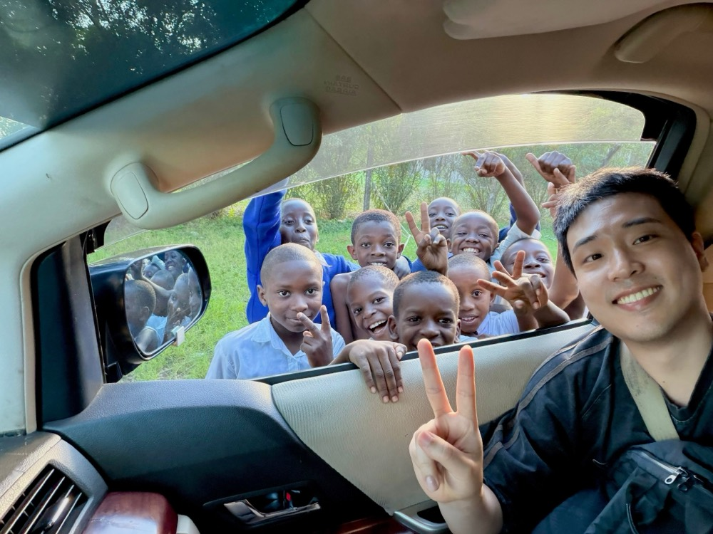

Genomic surveillance of dengue & chikungunya viruses
Hands-on sequencing training for local teams plus genomic analysis to characterize circulating strains and reconstruct arbovirus transmission.

Veterinarian · MSc Researcher, Wildlife Health Lab
Studying how viruses emerge, evolve, and spread through wildlife — a disease ecologist working under a One Health lens.
One Health at the wildlife–livestock–human interface
I'm a veterinarian (DVM) and Master's researcher in the Wildlife Health Laboratory at the College of Veterinary Medicine, Konkuk University, Seoul. My research investigates how pathogens emerge, circulate, and evolve across wildlife, livestock, and human populations.
Combining field surveillance, whole-genome sequencing, and phylodynamic analysis, I study viruses and bacteria in hosts from cinereous vultures and gulls to feral pigeons and wild boars — aiming to understand emergence risk before it becomes an outbreak.
What I'm working on right now
Hands-on sequencing training for local teams plus genomic analysis to characterize circulating strains and reconstruct arbovirus transmission.
Inferring transmission linkages and spread of avian paramyxoviruses in wild birds with phylogenetic and phylodynamic approaches.
Three intersecting threads
Surveillance of viral and bacterial pathogens in raptors, migratory birds, and wild mammals.
Whole-genome sequencing, phylogeographics, and phylodynamics of emerging viruses.
One Health approaches to zoonotic pathogens crossing the wildlife–human interface.
8 peer-reviewed articles · click any to expand
Presentations and on-the-ground research
Education, funding & honors
Wildlife Health Laboratory · Konkuk University, Seoul
Gyeongsang National University, Jinju
Awarded by Gyeongsang National University · Fall semester
Open to collaborations in wildlife genomics & One Health